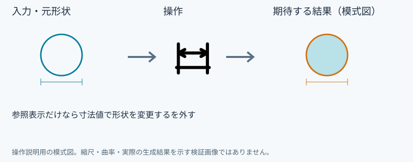
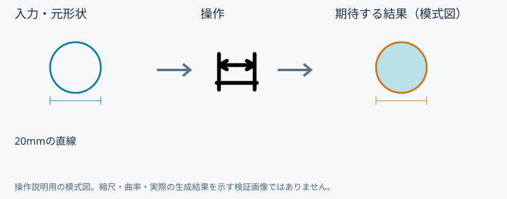
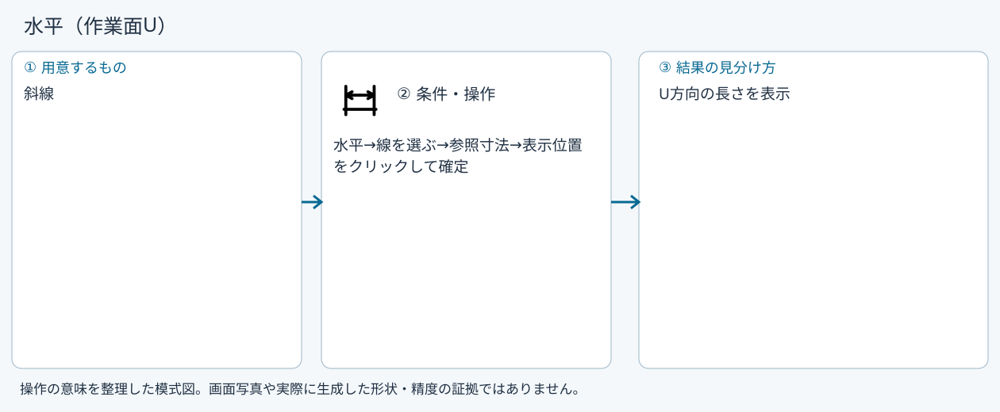
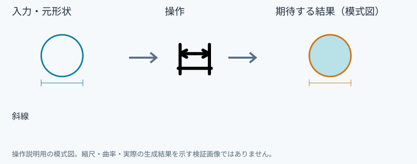
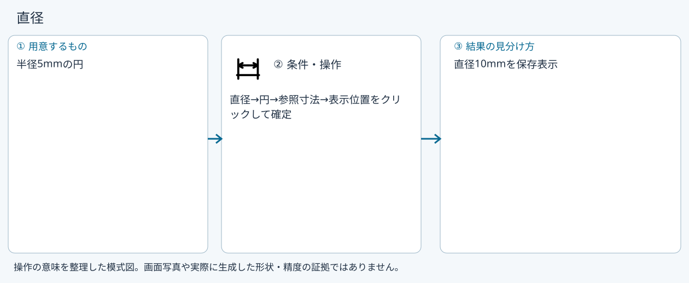
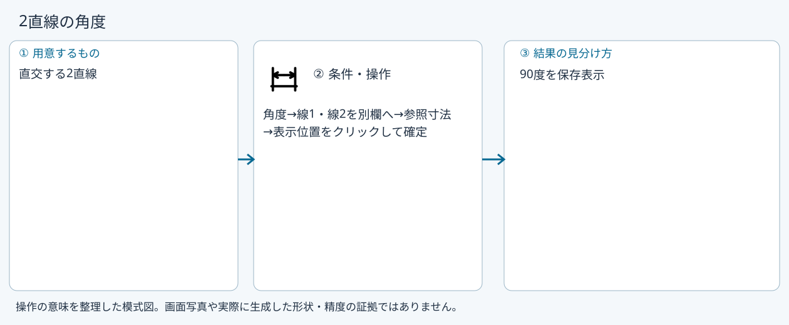
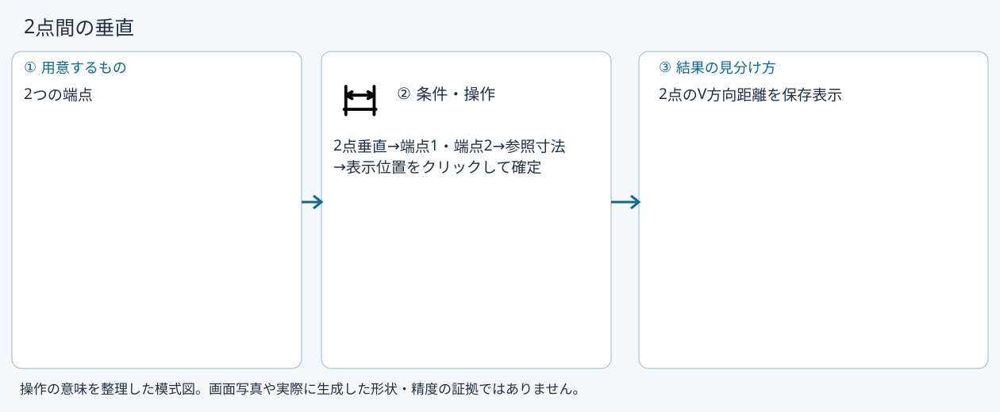
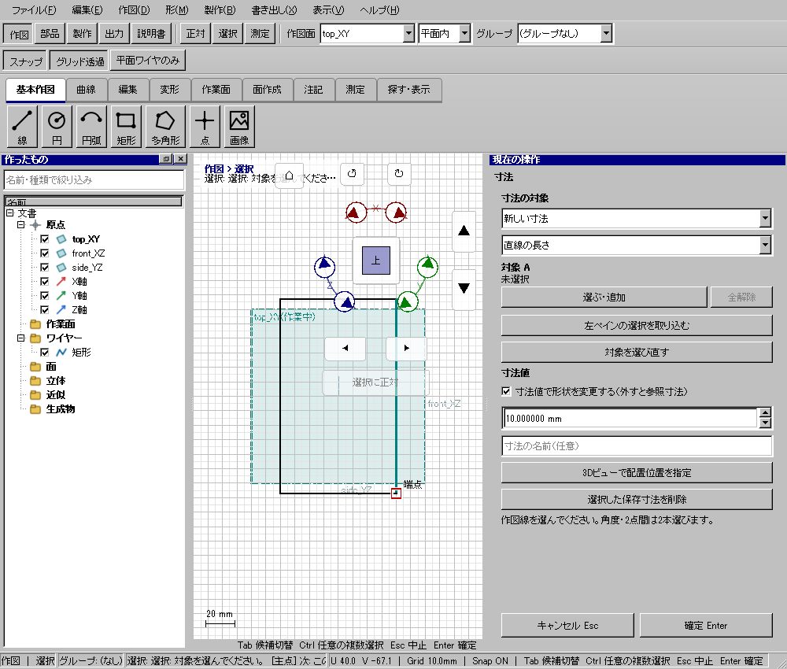

寸法
具体例: 長さ20mmを寸法値で30mmへ変える

準備
XY平面内に長さ20mmの直線を描く
操作手順
- 寸法を開く
- 直線の長さを選んで対象線を追加する
- 寸法値で形状を変更するを有効にする
- 30mmを入力し、3Dの表示位置を決めて確定する
設定: 参照表示だけなら寸法値で形状を変更するを外す
結果を確認
線の長さが30mmになり、寸法が保存される。拘束の対応範囲は失敗理由を確認する。
取消・やり直し
ダイアログの取消、またはペインの取消を使います。即時操作には未確定段階がありません。 確定済みの文書変更はCtrl+Z、やり直しはCtrl+Yです。保存・書出し済みのファイルはUndoの対象ではありません。
進めない場合
長さ・半径・直径・角度の寸法を配置し、形状を変更する寸法と参照寸法を切り替えます。
対象欄と3Dの強調を照合し、必要な線・面・部品を各役割へ指定します。処理中は計算表示を確認し、取消が可能な処理は取消を使います。
直線の長さ
準備: 20mmの直線

- 直線の長さ
- 対象線
- 駆動を有効
- 30mm
- 配置
- 確定
確認: 線が30mmになり寸法を保存
水平（作業面U）
準備: 斜線

- 水平
- 線を選ぶ
- 参照寸法
- 配置
- 確定
確認: U方向の長さを表示
垂直（作業面V）
準備: 斜線

- 垂直
- 線を選ぶ
- 参照寸法
- 配置
- 確定
確認: V方向の長さを表示
半径R
準備: 半径5mmの円
- 半径
- 円
- 参照寸法
- 配置
- 確定
確認: R5を保存表示
直径
準備: 半径5mmの円

- 直径
- 円
- 参照寸法
- 配置
- 確定
確認: 直径10mmを保存表示
2直線の角度
準備: 直交する2直線

- 角度
- 線1・線2を別欄へ
- 参照寸法
- 配置
- 確定
確認: 90度を保存表示
2点間
準備: 2つの端点
- 2点間
- 端点1・端点2
- 参照寸法
- 配置
- 確定
確認: 3Dの2点距離を保存表示
2点間の水平
準備: 2つの端点
- 2点水平
- 端点1・端点2
- 参照寸法
- 配置
- 確定
確認: 2点のU方向距離を保存表示
2点間の垂直
準備: 2つの端点

- 2点垂直
- 端点1・端点2
- 参照寸法
- 配置
- 確定
確認: 2点のV方向距離を保存表示
Windows版の操作画面
